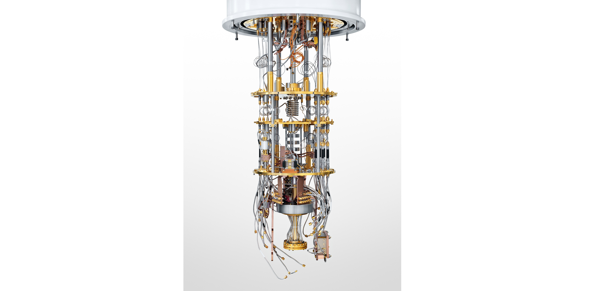

Quantum Computing
A Simple Introduction and Its Promising Future
By Sumitha Valsalam, PhD Research Scholar
Kerala University of Digital Sciences, Innovation and Technology
Introduction to Quantum Computing
Where did this idea come from?
The story of quantum computing begins not with computers, but with Quantum Physics: the revolutionary science that unveiled the strange, counter-intuitive rules governing our universe at the most microscopic scales. It was the groundbreaking work of pioneers in the early 20th century that laid the foundation for this new frontier.

Max Planck

Erwin Schrödinger

Albert Einstein

Richard Feynman
Decades later, in the 1980s, physicist Richard Feynman posed a brilliant question. He noted that simulating quantum systems on classical computers was profoundly difficult. His insight: why not build a computer that itself operates on quantum principles? This was the conceptual birth of Quantum Computing—the harnessing of quantum mechanics to solve problems far beyond the reach of any classical supercomputer.
What is a quantum computer?
Classical Computer
A device that uses classical mechanics, manipulating voltages through circuits and gates. Information is stored in bits, which have a definite state of either 0 or 1.

Quantum Computer
A device that leverages quantum mechanics to perform massively parallel computation. It uses phenomena like superposition and entanglement, storing information in qubits.
Why Learn About Quantum Computing?
Moore's Law & The Future of Computers
For decades, the power of classical computers has grown exponentially, an observation known as Moore's Law. However, this progress is slowing as we reach the physical limits of silicon. Transistors are now so small that quantum effects—once a nuisance—are becoming the main feature.
"There's Plenty of Room at the Bottom."
- Richard Feynman, 1959
Feynman foresaw that this microscopic realm would unlock a new paradigm of computation, one that we are just beginning to explore.
What does a quantum computer look like?

IBM's Superconducting System
Uses superconducting circuits cooled to near absolute zero.

Photon-based Systems
Manipulates individual photons (particles of light) to carry quantum information.

IonQ's Trapped-Ion System
Uses lasers to suspend and control individual ions as qubits.
The Quantum Advantage
Adding qubits increases power exponentially
The true power of quantum computers lies in their exponential scaling. While doubling the power of a classical computer requires doubling its bits, a quantum computer doubles its computational space with every single qubit added. A 64-qubit quantum computer can process 264 (18 quintillion) values simultaneously.
Exponential Growth
32 bits → 64 bits = 2x Classical Power
32 qubits → 33 qubits = 2x Quantum Power
Key Concepts Simplified
Superposition
One thing being in many states at once.
Entanglement
Two things linked, instantly affecting each other.
Interference
Canceling wrong answers, amplifying right ones.
How is Information Stored? The Qubit
The qubit is the fundamental unit of quantum information. While a classical bit is a simple switch (0 or 1), a qubit can be |0⟩, |1⟩, or a combination of both. We visualize this state on the Bloch Sphere, where any point on the surface represents a valid qubit state.
Where $\alpha$ and $\beta$ are probability amplitudes, and $|\alpha|^2 + |\beta|^2 = 1$.
Classical Bit vs. Quantum Bit
| Classical Bits | Quantum Bits |
|---|---|
| Definite state: 0 or 1 | Superposition state: $\alpha|0\rangle + \beta|1\rangle$ |
| Unchanged by measurement | State collapses upon measurement |
| Can be perfectly copied | Cannot be copied (No-Cloning Theorem) |
Quantum Gates
Quantum gates are the building blocks of quantum circuits. They are reversible operations that manipulate qubits by rotating their state on the Bloch Sphere. These are represented by unitary matrices.
Pauli-X (NOT)
Flips the qubit state. |0⟩ ↔ |1⟩.

Hadamard (H)
Creates an equal superposition.

Pauli-Z (Z)
Applies a phase shift to |1⟩.

Controlled-NOT (CNOT)
A 2-qubit gate essential for creating entanglement. It flips the target qubit if and only if the control qubit is |1⟩.

Quantum Circuits & Algorithms
Quantum Circuit
A quantum circuit models a computation as a sequence of quantum gates applied to qubits. Time flows from left to right, showing how the qubits' states evolve.

Famous Quantum Algorithms
Shor's Algorithm
Finds prime factors of large numbers exponentially faster than classical computers. Poses a major threat to modern encryption like RSA.
Grover's Algorithm
Searches an unsorted database quadratically faster. Finds an item in $\sqrt{N}$ steps instead of N/2, revolutionizing search problems.
Quantum Programming
Quantum programming languages and frameworks act as a bridge, allowing us to design quantum circuits and algorithms in a high-level language like Python, and then run them on simulators or real quantum hardware.
# "Hello, World!" in Qiskit: Creating an Entangled Bell State
from qiskit import QuantumCircuit, execute, Aer
# Create a 2-qubit quantum circuit
qc = QuantumCircuit(2, 2)
# 1. Apply a Hadamard gate to qubit 0 to create superposition
qc.h(0)
# 2. Apply a CNOT gate to entangle qubit 0 and qubit 1
qc.cx(0, 1)
# 3. Measure the qubits
qc.measure([0,1], [0,1])
# Execute on a simulator and print the results
simulator = Aer.get_backend('qasm_simulator')
result = execute(qc, simulator, shots=1024).result()
counts = result.get_counts(qc)
print(counts)
# Expected output: {'00': ~512, '11': ~512}
Applications and the Future
Cryptography
Breaking current encryption standards and creating new, quantum-safe ones.
Drug Discovery & Materials
Simulating molecules to design new medicines and novel materials.
Artificial Intelligence
Enhancing machine learning for complex pattern recognition and data analysis.
Complex Optimization
Solving logistical problems in finance, shipping, and travel.
Case Study: Quantum Cryptography
The Post-Quantum World
Experts predict that quantum computers could break today's standard encryption (RSA-2048) within a decade. This threat is driving a global race to develop and deploy "quantum-resistant" algorithms.
Neven's Law
Google's Hartmut Neven suggests quantum computing power grows at a "doubly-exponential" rate, far faster than Moore's Law, accelerating the timeline for this threat.
Solution: Quantum Key Distribution (QKD)
QKD offers a physically secure way to exchange encryption keys. It relies on a core principle of quantum mechanics: the act of observing a quantum system disturbs it. If an eavesdropper ("Eve") tries to intercept the key, her measurement alters the qubits, and her presence is immediately detected by the legitimate users ("Alice" and "Bob").

Problems with Quantum Computers
Decoherence: The #1 Enemy
Qubits are incredibly fragile. Any interaction with their environment—heat, vibration, stray fields—can cause them to lose their quantum state, destroying the computation. This is the biggest engineering hurdle.
Error Correction
Due to decoherence, robust error correction is essential. This requires bundling many noisy physical qubits into one stable "logical qubit," a process with massive overhead.
The NISQ Era
We are currently in the Noisy Intermediate-Scale Quantum (NISQ) era. Our computers are too "noisy" for full error correction and have too few qubits for large algorithms, but they are powerful enough for valuable research and solving specific, smaller problems.
Quantum Careers Ahead
This rapidly growing field needs talent from diverse backgrounds—not just physics. Opportunities abound in software, hardware, AI, and security.
Research
Fundamental work in physics, CS, and math.
Software Engineering
Building compilers, libraries, and control software.
Cryptography
Creating the next generation of quantum-safe algorithms.
Quantum AI/ML
Applying quantum principles to enhance machine learning.
References
- Wikipedia: Further Reading
- Fonow View
- Science Magazine
- Nature Journal
- IBM Research: Quantum Molecule
- Phys.org: IonQ Next Generation
- Medium: NISQ Era
- ...and other links from the presentation.